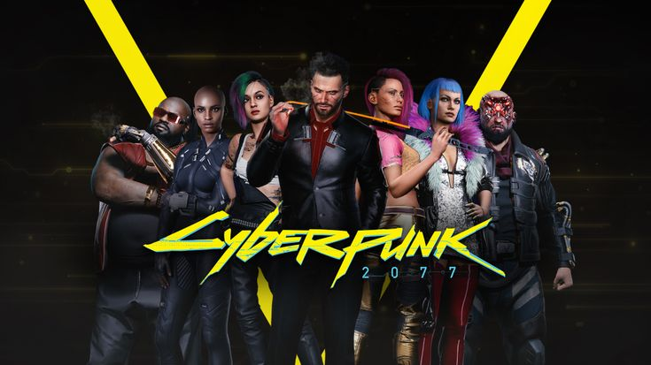
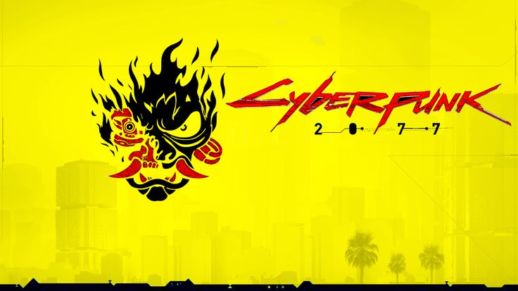

Найт-Сити - город мечты
Добро пожаловать в 2077 год — мир, где технологии слились с человеческим существованием, создав реальность, где всё можно улучшить, модифицировать или сломать. Найт-Сити — мегаполис будущего, пропитанный неоновым светом и кровью, стоит как памятник человеческой жадности, порокам и безжалостному капитализму.
После ядерной катастрофы и экономического коллапса мир оказался раздробленным. Корпорации поднялись из пепла старых государств, став единственными правителями. Они контролируют всё — от финансов и технологий до жизней обычных людей. Мир делится на элиту, живущую в небоскрёбах, и бедняков, вынужденных выживать на улицах, рискуя жизнью ради клочка надежды.
Главный герой, V, — наёмник, стремящийся сделать себе имя в этом жестоком мире. Ему предстоит столкнуться с последствиями рискованного ограбления, результатом которого становится загрузка в его сознание цифровой копии Джонни Сильверхенда — легендарного рокера и террориста. Джонни движим жаждой мести и разрушения корпораций, и его присутствие в голове V постепенно начинает стирать грани между двумя личностями.

Локации
Найт-Сити — главный игровой мир Cyberpunk 2077, разделённый на уникальные районы, каждый из которых обладает своим характером и атмосферой:
Сити-Центр — сердце власти и богатства. Небоскрёбы корпораций взмывают ввысь, а улицы наполнены элитами в дорогих костюмах и бронированными охранниками. Это место, где власть чувствуется в каждой детали — от блестящих фасадов до бесконечных камер наблюдения.
Уотсон — заброшенные фабрики, нелегальные рынки и притоны. Здесь царит хаос, а бандитские группировки, такие как Мальстрём, правят улицами. Нищета сочетается с высокими технологиями, создавая контрасты между бедностью и возможностями.
Вестбрук — район богатых и знаменитых. Здесь расположены клубы, казино и роскошные особняки. Однако за фасадом гламура скрываются заговоры и преступные махинации.
Пасифика — когда-то задуманный как курорт, он превратился в зону беззакония. Район заполнен заброшенными зданиями, где правит жестокая банда Животные и таинственные «Вудуисты». Здесь процветает нелегальная торговля технологиями и наркотиками.
Пустоши (Badlands) — пригородные зоны и выжженные земли за пределами Найт-Сити. Здесь живут кочевники, ведущие свои дела вдали от корпоративного влияния.
Персонажи
V — главный герой, наёмник, чей характер, внешний вид и происхождение настраиваются игроком. Его история зависит от выбранного пути: Корпорат — бывший работник корпорации, знакомый с миром интриг и предательств, Кочевник — выходец из пустошей, привыкший к суровым условиям выживания,Дитя улиц — выросший в криминальной среде, мастер выживания на улицах.
Джонни Сильверхенд — анархист и фронтмен культовой рок-группы Samurai. Его цифровая копия становится важной частью сюжета, открывая доступ к секретам прошлого и будущего Найт-Сити.
Джеки Уэллс — друг и напарник V, мечтающий стать легендой среди наёмников.
Панам Палмер — кочевница с сильным характером, способная стать союзником или романтическим интересом.
Джуди Альварес — хакер и эксперт по брейндансам, борющаяся за справедливость.
Ривер Уорд — детектив полиции, охотящийся за преступниками.
Такемура — бывший телохранитель корпорации Arasaka, связанный с корпоративными интригами.
Игровой процесс
Cyberpunk 2077 предлагает нелинейный подход к прохождению и обширную кастомизацию персонажа.
Ролевая система — игроки выбирают стиль игры: скрытное проникновение, кибер-взлом или открытый бой.
Импланты — модификация тела для улучшения навыков: киберглаз, сканеры, усиленные руки и клинки.
Хакерство — возможность взламывать камеры, роботов и врагов, контролируя окружение.
Открытый мир — исследуйте улицы, здания и секретные места, взаимодействуйте с NPC и выполняйте задания.
Транспорт — множество машин и мотоциклов с возможностью угона и тюнинга.